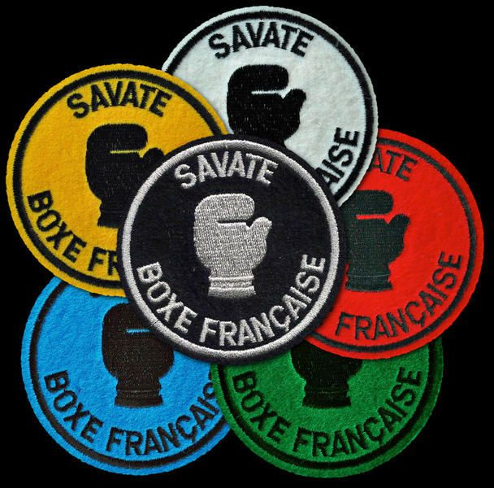

Savate is a French kickboxing combat sport that combines elements of English boxing with kicking skills. It is sometimes referred to as boxe française, savate boxing, French boxing, or French footfighting. Unlike some sports, such Southeast Asian boxing or kickboxing, which permit the use of the knees or shins, but allow strikes to any region of the body, only foot kicks are permitted. The French word "savate" means "ancient shoe or boot." Savate fighters don specialized footwear. Savate practitioners who are male are referred to as tireurs and those who are female as tireuses.. . . . . .
It is up to each club to organize grade transitions (often about two per season) in order to measure the progress of students or competitors. In this system of technical grades, the "gloves" determine the level of the fencer (name given to the savate practitioner) and allow the registration to certain competitions when a minimum level is required. Here are the different grades: blue, green, red, white, yellow, and technical silver glove or bronze glove. These grades are each composed of three degrees (the white glove 3rd degree is therefore the highest grade that can be reached at the club level since the passage of grades for the yellow glove is done by the departmental committee or the league). The technical silver glove (GAT) is an additional distinction, it allows to participate in certain competitions which require it. GAT sessions are also organized by the league a few times a year. Another grade, hierarchically at the same level as the GAT, is the bronze glove. This one sees its application in the competitions in the form of fights. It can only be acquired by accumulating points through victories in combat. The bronze glove opens the doors to 1st series fights: helmet and shin guard are forbidden. There is also a "competition grade": silver competition glove 1, 2, 3, 4 and 5. There are also honorary Vermeil and Gold gloves
